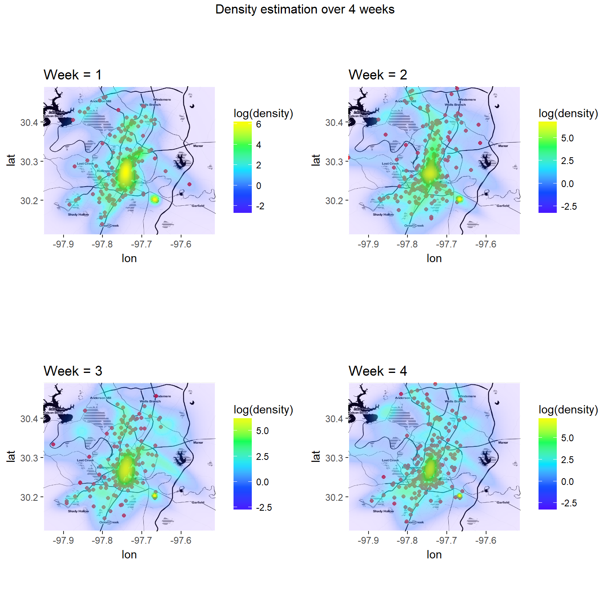

rideaustin.Rmdlibrary(pldensity)
library(tidyverse)
library(ggplot2)
library(ggmap)
library(gridExtra)data(austin5w)
austin5w %>%
head()## # A tibble: 6 x 61
## X1 RIDE_ID started_on created_date
## <int> <int> <dttm> <dttm>
## 1 917636 917823 2017-02-10 20:00:15 2017-02-10 19:50:48
## 2 917637 917824 2017-02-10 20:00:33 2017-02-10 19:57:36
## 3 917638 917825 2017-02-10 20:00:37 2017-02-10 19:55:11
## 4 917639 917826 2017-02-10 20:00:46 2017-02-10 20:00:04
## 5 917640 917827 2017-02-10 20:00:49 2017-02-10 19:53:38
## 6 917641 917828 2017-02-10 20:01:21 2017-02-10 19:53:06
## # ... with 57 more variables: updated_date <dttm>, completed_on <dttm>,
## # distance_travelled <int>, end_location_lat <dbl>, end_location_long
## # <dbl>, driver_rating <dbl>, rider_rating <int>, active_driver_id
## # <int>, charity_id <int>, requested_car_category <chr>,
## # free_credit_used <chr>, surge_factor <int>, start_location_long <dbl>,
## # start_location_lat <dbl>, rider_id <int>, round_up_amount <dbl>,
## # promocode_redemption_id <chr>, driver_reached_on <dttm>, base_fare
## # <dbl>, total_fare <dbl>, rate_per_mile <dbl>, rate_per_minute <dbl>,
## # time_fare <dbl>, driver_accepted_on <dttm>, esimtated_time_arrive
## # <chr>, tipped_on <chr>, tip <chr>, driving_time_to_rider <chr>,
## # dispatch_location_lat <dbl>, dispatch_location_long <dbl>,
## # driving_distance_to_rider <chr>, dispatched_on <dttm>, status <chr>,
## # driver_id <int>, car_id <int>, color <chr>, make <chr>, model <chr>,
## # year <chr>, car_categories_bitmask <int>, rating <dbl>,
## # HOURLYVISIBILITY <dbl>, HOURLYDRYBULBTEMPC <dbl>,
## # HOURLYRelativeHumidity <dbl>, HOURLYWindSpeed <dbl>,
## # HOURLYWindDirection <dbl>, HOURLYPrecip <int>, DAILYMaximumDryBulbTemp
## # <int>, DAILYMinimumDryBulbTemp <int>, DAILYDeptFromNormalAverageTemp
## # <dbl>, DAILYAverageRelativeHumidity <int>, DAILYSunrise <int>,
## # DAILYSunset <int>, DAILYPrecip <int>, DAILYAverageWindSpeed <dbl>,
## # DAILYPeakWindSpeed <int>, week <int>time_periods <- 4data_list <- split(austin5w, as.factor(austin5w$week)) %>%
map(~ data.matrix(.[ ,c("start_location_long", "start_location_lat")]))mod0 <- ddpn_init(
nparticles = 500,
lambda = c(-97.731970, 30.302445),
kappa = .001,
nu = 3,
Omega = 0.0005 * diag(2),
alpha = 50,
rho = 0.1
) set.seed(110104)
mods_cor <- vector("list", time_periods)
mods_cor[[1]] <- ddpn_mix(mod0, data_list[[1]])
for (t in 2:time_periods) {
mods_cor[[t]] <- ddpn_mix(mods_cor[[t - 1]]$updated_model, resample_every=1, data_list[[t]])
}Visualization of results.
austinmap <- get_map(location = c(-97.731970, 30.302445), maptype = "toner", zoom = 11)
austinmap_attr <- attr(austinmap, "bb")resolution <- 128
mesh <- expand.grid(
lon = seq(austinmap_attr$ll.lon, austinmap_attr$ur.lon, length.out = resolution),
lat = seq(austinmap_attr$ll.lat, austinmap_attr$ur.lat, length.out = resolution)
)g <- list()
for (t in 1:time_periods) {
x <- data_list[[t]]
density <- ddpn_eval(mods_cor[[t]]$updated_model, data.matrix(mesh), nparticles = 500)
austinmap_density <- data.frame(
lon = mesh[ ,1],
lat = mesh[ ,2],
density = density,
alpha = log(density)
)
g[[t]] <- ggmap(austinmap) +
geom_point(data = data.frame(lon = x[ ,1], lat = x[ ,2]), colour = "red", alpha = 0.9) +
coord_cartesian() +
coord_fixed() +
geom_raster(data = austinmap_density, aes(x = lon, y = lat, fill = log(density), alpha = alpha)) +
scale_fill_gradientn(colors = topo.colors(5)) +
scale_alpha_continuous(guide = FALSE) +
scale_colour_continuous(guide = FALSE, limits=c(-8, 8)) +
labs(title = paste("Week =", t))
}grid.arrange(g[[1]], g[[2]], g[[3]], g[[4]], ncol=2,top="Density estimation over 4 weeks")
Choosing the right alpha